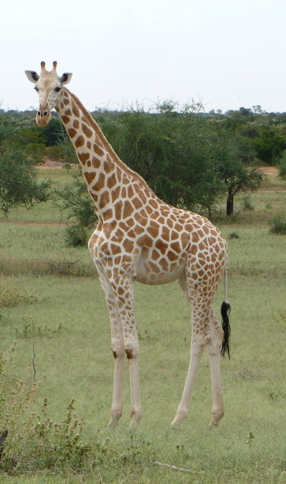

Giraffe One on One
Giraffes are the tallest land animals on Earth, known for their long necks and legs. They are native to Africa and can be found in savannas, grasslands, and open woodlands. Giraffes primarily feed on leaves, flowers, and fruits from tall trees, using their long necks to reach high foliage that other herbivores cannot access. They have a unique walking gait, moving both legs on one side of their body at the same time. Giraffes are social animals that often form loose herds, and they communicate through various sounds, including grunts, snorts, and even low-frequency humming.
Giraffes are native to the African continent and live predominantly in savannahs, where vast expanses of grasslands and scattered trees provide the perfect mix of cover and open spaces for grazing. Most giraffe populations can be found in East Africa, particularly in reserves such as Serengeti National Park and Amboseli National Park. Some are also found in the reserves of southern Africa.
Giraffe Eats
- Giraffe Eats
- Giraffe Food Varieties
- Leaves
- shoots
- buds